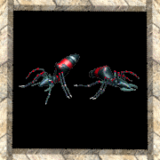
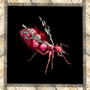

|
2002年11月4日
韓國測試伺服器11月4日檔案內容
來源：Nue's Lineage
韓國測試伺服器今天更新了二百多個SPR檔案，Nue's Lineage率先為大家解開以下新NPC的圖片：
 變種巨大兵蟻(Mutated Giant Soldier Ant)
 變種巨蟻女皇(Mutated Giant Ant Queen)
火精靈(Spirit of Fire)
 地精靈(Spirit of Earth) 地精靈(Spirit of Earth)
12名死騎擊倒水龍所需時間不用十秒！？
注意：以下為在一定的假設下而推算出的理論速度，在實際上當然還有很多因素會影響。
以下內容純粹為理論上的速度，我們作出的假設及結論如下：
- 全部角色皆為52級體騎，51級和52級時加了兩點力量，配合力套與體魄後力量有25，力量對傷害加成為6點。
- 52級騎士的等級對傷害加成是5點。
- 擬似魔法武器/祝福武器魔法的傷害加成為2點
- 騎士裝備+7鎖子甲破壞者(4/5)。
- 水龍是大型怪。
- 因此，假如成功命中後平均傷害值為[(6+5+7+2+1)+(6+5+7+2+5)] / 2 = 23
- 騎士對水龍的命中率為90%。
- 死亡騎士變身在勇綠狀態下攻擊速度為每秒2.667(8/3)下。
- 鎖子甲破壞者保持不壞的狀態。
- 水龍身型佔2x2格，可以同時間被12名角色近距離攻擊。
- 12名死騎在同一時間佔到位置及攻擊。
- 因此考慮以上因素，12位死騎每秒的平均傷害為23 * 0.90 * 8/3 *12 = 662.4
- 水龍體力的回復速度為每5秒156HP，即是每秒31.2。
- 水龍的體力是6300。
- 因此，擊倒水龍的理想時間為6300 / (662.8-31.2) = 9.97秒
- 假如配合烈炎氣息，平均傷害值會提升至27，而擊倒水龍亦會降至8.10秒。
- 假如全部騎士再配合+9鎖子甲破壞者，時間則降至7.54秒！
- 但又假如騎士的命中率只有70%，而水龍回血速度是每秒156HP，騎士只用+7鎖破，那麼時間便會升至14.04秒。
- 又假如騎士的命中率只有50%，水龍回血速度是普通怪的十倍，為每秒312HP，騎士用+7鎖破，烈炎氣息及擬武，那麼時間便會升至52.5秒。
當然，在實際上最難做的是找12名不怕死的死騎、同時間一起接近水龍攻擊和保持在不死的狀態，但假如你能解決以上困難，那麼水龍將會是你的午餐！ |